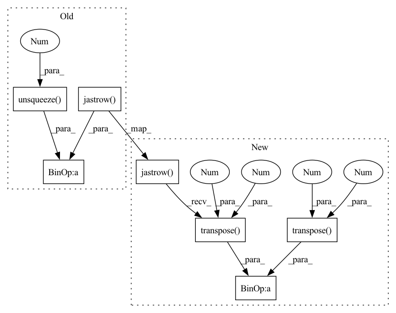

Pattern ID :17311

Before Change
if self.use_jastrow:
jast = self.jastrow(x)
grad_jast = self.jastrow(x, derivative=1, jacobian=False)
djast = grad_jast.transpose(1, 2) / jast.unsqueeze(-1)
bgrad = bgrad + djast.unsqueeze(2)*mo.unsqueeze(-1)
return bgrad
After Change
if self.use_jastrow:
jast = self.jastrow(x).transpose(0, 1)
grad_jast = self.jastrow(x,
derivative=1,
jacobian=False).transpose(1, 2)
grad_jast = grad_jast.flatten(start_dim=1).transpose(0, 1)
grad_jast = grad_jast / jast
grad_jast = grad_jast.unsqueeze(2).unsqueeze(3)
bgrad = bgrad + grad_jast*mo.unsqueeze(0)
In pattern: SUPERPATTERN
Frequency: 3
Non-data size: 7
Instances
Fragment ID: 57509353
Project Name: nlesc-jcer/qmctorch
Commit Name: 768d611456931e6ab5349bbe77fa45f2dcd415fd
Time: 2020-08-18
Author: nicolas.gm.renaud@gmail.com
File Name: qmctorch/wavefunction/wf_orbital.py
M Class Name: Orbital
N Class Name: Orbital
M Method Name: get_grad_operator(5)
N Method Name: get_grad_operator(5)
M Parent Class: WaveFunction
N Parent Class: WaveFunction
M File Name: qmctorch/wavefunction/wf_orbital.py
N File Name: qmctorch/wavefunction/wf_orbital.py
M Start Line: 349
M End Line: 353
N Start Line: 341
N End Line: 358
'>
Before Change
if self.use_jastrow:
jast = self.jastrow(x).transpose(0, 1)
grad_jast = self.jastrow(x,
derivative=1,
jacobian=False).transpose(1, 2)
grad_jast = grad_jast.flatten(start_dim=1).transpose(0, 1)
grad_jast = grad_jast / jast
grad_jast = grad_jast.unsqueeze(2).unsqueeze(3)
bgrad = bgrad + grad_jast*mo.unsqueeze(0)
After Change
if self.use_jastrow:
jast = self.jastrow(x)
grad_jast = self.jastrow(x,
derivative=1,
jacobian=False)
grad_jast = grad_jast.transpose(1, 2) / jast.unsqueeze(-1)
grad_jast = grad_jast.flatten(start_dim=1)
grad_jast = grad_jast.transpose(0, 1)
'>
Fragment ID: 57509354
Project Name: nlesc-jcer/qmctorch
Commit Name: d6a31fddd6e4d758f9f714e52ba34ff6727030d4
Time: 2020-08-18
Author: nicolas.gm.renaud@gmail.com
File Name: qmctorch/wavefunction/wf_orbital.py
M Class Name: Orbital
N Class Name: Orbital
M Method Name: get_grad_operator(5)
N Method Name: get_grad_operator(5)
M Parent Class: WaveFunction
N Parent Class: WaveFunction
M File Name: qmctorch/wavefunction/wf_orbital.py
N File Name: qmctorch/wavefunction/wf_orbital.py
M Start Line: 350
M End Line: 358
N Start Line: 350
N End Line: 361
'>
Before Change
if self.use_jastrow:
J = self.jastrow(x)
dJ = self.jastrow(x, derivative=1) / J
d2J = self.jastrow(x, derivative=2) / J
dJdMO = dJ.unsqueeze(-1) * self.mo(self.ao(x, derivative=1))
d2JMO = d2J.unsqueeze(-1) * MO
return self.fc(self.kinpool(MO, d2MO, dJdMO, d2JMO,
After Change
if self.use_jastrow:
J = self.jastrow(x)
dJ = self.jastrow(
x, derivative=1, jacobian=False).transpose(1, 2) / J.unsqueeze(-1)
d2J = self.jastrow(x, derivative=2) / J
dAO = self.ao(x, derivative=1, jacobian=False).transpose(2, 3)
dMO = self.mo(dAO).transpose(2, 3)
dJdMO = (dJ.unsqueeze(2) * dMO).sum(-1)
d2JMO = d2J.unsqueeze(-1) * MO
return self.fc(self.kinpool(MO, d2MO, dJdMO, d2JMO,
'>
Fragment ID: 57509349
Project Name: nlesc-jcer/qmctorch
Commit Name: 7006f7140f0d5376e776668ff36f80b57cb3e46d
Time: 2019-12-27
Author: nicolas.gm.renaud@gmail.com
File Name: deepqmc/wavefunction/wf_orbital.py
M Class Name: Orbital
N Class Name: Orbital
M Method Name: kinetic_energy_jacobi(3)
N Method Name: kinetic_energy_jacobi(3)
M Parent Class: WaveFunction
N Parent Class: WaveFunction
M File Name: deepqmc/wavefunction/wf_orbital.py
N File Name: deepqmc/wavefunction/wf_orbital.py
M Start Line: 129
M End Line: 133
N Start Line: 130
N End Line: 138